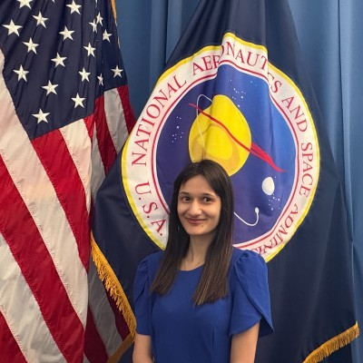

Machine Learning & Software Engineering
Nirmayi Kelkar
Machine learning intern at NASA Ames Research Center, working on lunar operations with agentic AI. Master’s student in Computer Science at Columbia University, specializing in machine learning.

- Now
- NASA Ames Research Center
- Studying
- MS Computer Science, Columbia · 4.0 GPA
- Previously
- NASA Goddard · BNY · Credit Suisse
- Based in
- Greater Seattle Area
01About
I am pursuing a Master’s in Computer Science from Columbia University (4/4 GPA) with a specialization in Machine Learning.
Previously, I worked as a Senior Associate Software Developer at the Bank of New York and as a summer Software Cybersecurity intern at NASA Goddard. This fall I am at NASA Ames, working on lunar space exploration with agentic AI.
I am a U.S. citizen and do not require work sponsorship.
02Experience
-
– Present 4 mos
Machine Learning Intern Current
NASA Ames Research Center · Full-time
Mountain View, California, United States
Working in the Lunar Operations Coordination Framework team.
-
– 4 mos
Software Intern
NASA Goddard Space Flight Center · Internship
Maryland, United States · On-site
- Planned, designed, and integrated an AI-based software assurance module for NASA’s core Flight System (cFS). Implemented a real-time Isolation Forest anomaly detector in C for embedded targets, validating system behavior to achieve sub-millisecond inference within strict (<2 MB) resource constraints, directly enhancing flight software assurance capabilities for safety-critical embedded operations.
- Performed technical analyses on flight and ground data systems, evaluating CCSDS telemetry fields (APID, packet length, inter-arrival time) to assess system resiliency and identify cybersecurity attack indicators; collaborated with Johnson Space Center teams to incorporate operationally-derived cyber attack vectors into threat detection validation, improving cyber-anomaly recall by 15% through statistical feature engineering and split-statistic importance ranking.
- Conducted IV&V lifecycle software engineering activities, performing static and dynamic code verification, boundary condition analysis, and test case design; developed software lifecycle work products, including requirement-to-test traceability matrices mapping system-level anomaly detection requirements to 30+ verification cases, ensuring AI-augmented flight software components maintained full coverage, compliance with safety-critical coding standards, and auditable traceability from stakeholder requirements through verification.
- Planned and executed Hardware-in-the-Loop (HITL) software simulations and automated test campaigns to verify RTEMS-based system implementation. Engineered C/C++ cross-compilation pipelines and runtime diagnostics, achieving a 98% qualification pass rate and reducing deployment time by 35%.
C · C/C++ · Isolation Forest · cFS · RTEMS · CCSDS · HITL · IV&V
-
– 6 mos
Research Assistant
Columbia University · Part-time
New York City Metropolitan Area · On-site
Working in the GILM lab under Dr Corey Toler-Franklin on AI for Cancer Detection.
Our lab is developing computational algorithms that use deep learning to model changes in protein structure from multispectral observations of tissue. Once computed, the model can be applied to any tissue observation to detect a variety of protein markers without further spectral analysis. The deep learning model will be quantitatively evaluated on a learning dataset of cancer tumors.
Deep learning · Multispectral imaging · Computational pathology
-
– 1 yr 11 mos
Software Engineer
BNY Mellon
- Migrated enterprise BNY client-facing websites using Adobe Experience Manager.
- Created reusable components in AEM using HTL, JavaScript, Java, Apache Sling, Java Servlets, schedulers, and workflows.
- Worked on the core Java backend using the collections framework.
- Took leadership for delivering the boutique investment management website “Dreyfus.”
- Worked closely with product owners, designers, and global stakeholders to design, develop, and maintain more than 5 client-facing websites and deliver tailored solutions.
Java · Adobe Experience Manager · HTL · JavaScript · Apache Sling · Agile
-
– 3 mos
Technology Intern
Credit Suisse
- Implemented an automation service using Java, Sikuli and Selenium technology stack for trade booking.
- Developed a generic artifact which can automate the booking, cancelling and modification for a batch of trades.
- Reduced 100% manual effort for trade booking and validating the trades for APAC, Europe and Americas regions.
- Used Jenkins to integrate the artifact in the intra–Credit Suisse network.
Java · Selenium · Sikuli · Jenkins
-
– 4 mos
Student Intern
Tech Mahindra
Built the recommendation system for similar startup prediction using the Cosine Similarity algorithm.
Recommender systems · Cosine similarity
03Education
Columbia University
Master’s degree, Computer Science · Machine Learning track
GPA 4.0 / 4.0
Publication
Analysing the sentiments of Marathi–English code-mixed social media data using machine learning techniques
Certifications
- Introduction to Machine Learning
- Python Data Structures
- Smart Cities
04Skills
Machine learning
Artificial Intelligence, Natural Language Processing, Deep Learning, Anomaly Detection (Isolation Forest), Agentic AI, Recommender Systems, Feature Engineering
Flight & embedded software
NASA core Flight System (cFS), RTEMS, CCSDS telemetry, Hardware-in-the-Loop testing, IV&V, cross-compilation pipelines
Software engineering
Python, C, C++, Java, JavaScript, Adobe Experience Manager, Apache Sling, Selenium, Jenkins, Agile, Search Engine Optimization
Languages
English (native or bilingual), Marathi (full professional), Hindi (limited working)